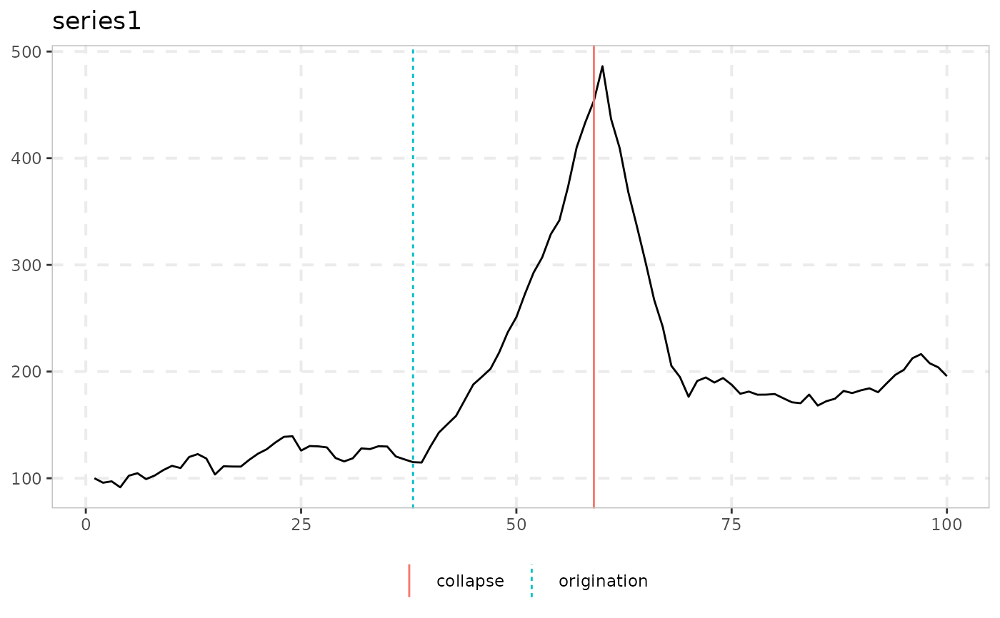
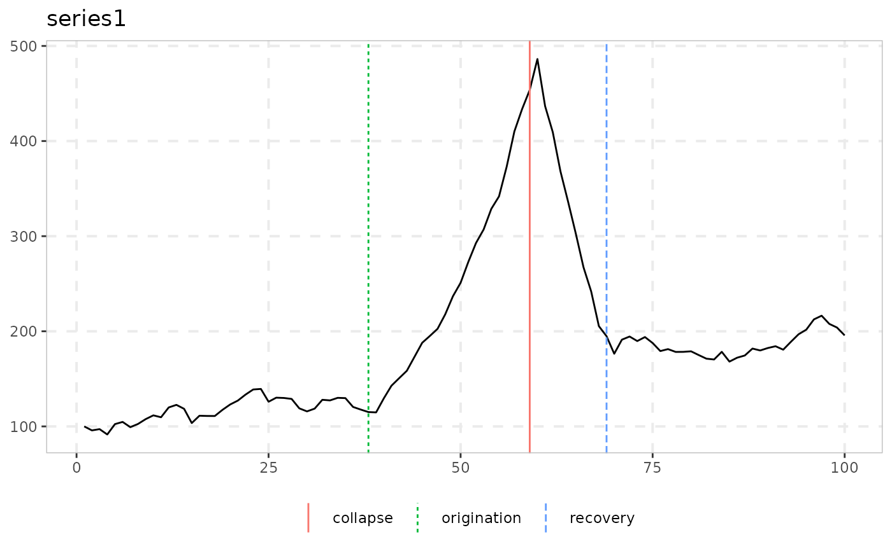
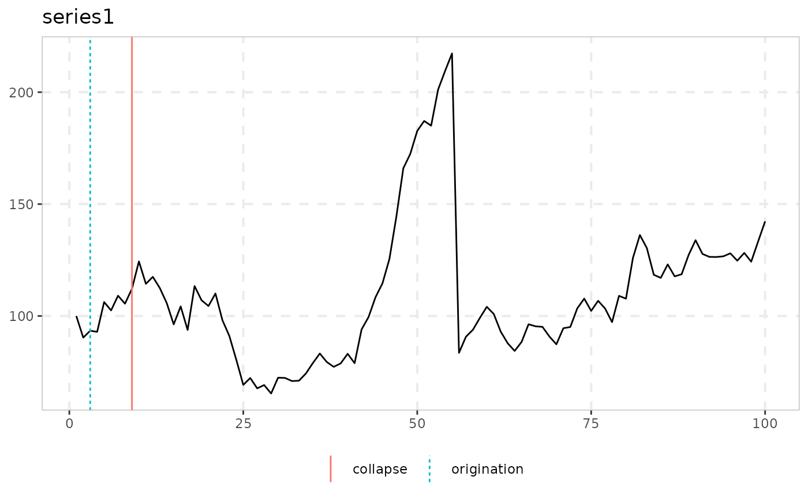

dating_pdc dates a single bubble episode with the sequential
sample-splitting method of Pang, Du & Chong (2021) and its four-regime extension
by Kurozumi & Skrobotov (2023). The regime structure is fixed: a unit root, an
explosive regime, a stationary collapse and, optionally, a final unit-root
recovery regime. The breakpoints are estimated one at a time. Each is a
closed-form residual-sum-of-squares minimization over a no-intercept AR(1)
model, computed in \(O(T)\) time with cumulative sums.
Arguments
- data
A univariate or multivariate numeric time series object, a numeric vector or matrix, or a data.frame. A column may have leading or trailing
NAvalues, which describes an unbalanced panel in which series enter or exit the sample at different times. Those periods are filled withNAinbadfandbsadfand excluded from theadf,sadfandgsadfof that series. InteriorNAvalues (a gap in the middle of a series) are not supported. When any series is padded in this way, the panel statistics (bsadf_panelandgsadf_panel) are not available, and the function returnsNAfor them with a warning.- regimes
Either
3(PDC: unit root, explosive, stationary collapse) or4(KS: adds a final unit-root recovery regime after the collapse).- trim
Minimum fraction of the (differenced) sample required on either side of each breakpoint search (default 0.05, as in the empirical application of KS. PDC use 0.05 to 0.1 in their simulations).
- type
"ols"(default) for the plain homoskedastic estimator, or"wls"for the volatility-corrected two-step estimator of Kurozumi & Skrobotov (2023).- kernel
Kernel for the spot-volatility estimator when
type = "wls","gaussian"(default) or"uniform". It is ignored whentype = "ols".- h
Bandwidth for the spot-volatility estimator when
type = "wls". The default is leave-one-out cross-validation. It is ignored whentype = "ols".
Value
An object of class dating_pdc_obj. It is a data.frame with
one row for each series and the columns origination, collapse and,
if regimes = 4, recovery, which give the estimated break dates (or
observation indices, if no date index is available). It has its own
print() and autoplot() methods.
Details
datestamp finds where the recursive BSADF statistic crosses a
critical value. This function instead fits an explicit regime-switching model
directly to the series, and it needs no critical values. PDC prove that the
collapse date is identified first, because its effect on the residual sum of
squares dominates that of the origination date. This justifies estimating the
breaks sequentially and not jointly. The alternative of Harvey, Leybourne &
Sollis (2017) selects among models by BIC and fits them jointly, and it is not
implemented here (see the package's enhancement notes for the cost and benefit
considerations).
type = "wls" adds the correction of Kurozumi & Skrobotov (2023) for
time-varying volatility. The function first fits the plain ("ols") model
and collects its fitted residuals for each regime. It then smooths their squares
nonparametrically, with the same Nadaraya-Watson kernel and leave-one-out
bandwidth estimator that exuber already uses in
radf_sbz_cv and radf_kp. Finally it reruns the same
sequential break search with each squared term weighted by the inverse of the
estimated spot variance. This needs no new critical-value theory. Like the OLS
version, it is a point estimate and not a threshold-crossing test.
Note
The function returns its own class and not radf_obj, so it does not work
with summary(), \link{datestamp} and tidy. It has its own print() and
autoplot() methods instead. print() shows the dating table (model, origination, collapse, recovery). See
vignette("naming-and-analysis", package = "exuber") for which functions fit
the shared pipeline and which do not.
![[Experimental]](figures/lifecycle-experimental.svg)
References
Pang, T., Du, L., & Chong, T. T. L. (2021). Estimating multiple breaks in the bubble regime with SSR minimization. Journal of Management Science and Engineering.
Kurozumi, E., & Skrobotov, A. (2023). Bubble dating: a sequential testing approach.
Kurozumi, E., & Skrobotov, A. (2023). Improving the accuracy of bubble date estimators under time-varying volatility. arXiv:2306.02977.
See also
datestamp for the threshold-crossing alternative of PSY.
Other dating:
dating_hls(),
dating_hlw(),
dating_knp(),
radf_recovery(),
rootstamp()
Examples
# \donttest{
# The unit-root, explosive, collapse and recovery process of sim_ps1() is the
# regime structure that dating_pdc() fits (true breaks at 40, 60 and 70)
y <- sim_ps1(n = 100, seed = 1)
res <- dating_pdc(y, regimes = 3L, trim = 0.05)
print(res)
#>
#> ── dating_pdc (n = 100, regimes = 3, type = ols) ───────────────────────────────
#>
#> series origination collapse
#> series1 38 59
#>
autoplot(res)

# Four-regime extension, which adds a post-collapse recovery breakpoint
res4 <- dating_pdc(y, regimes = 4L, trim = 0.05)
autoplot(res4)

# Volatility-weighted (WLS) variant, robust to time-varying volatility
y_vol <- sim_ps1(n = 100, seed = 1, e = sim_vol_break(99))
autoplot(dating_pdc(y_vol, type = "wls"))

# }